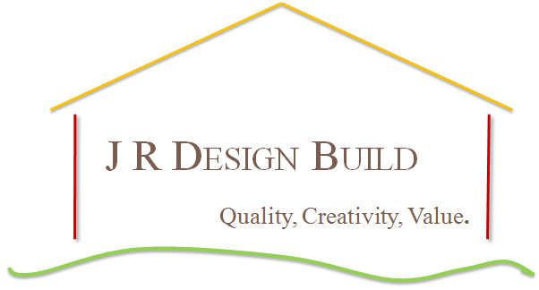

Jay Ryan brings 30 years experience in all phases of design and construction, from concept through finished product. With personal attention to detail and an eye to timeliness and value, you may rely on JR Design Build to make your project a success.
MHIC License # 101692
EPA Certified Lead Renovator # R-I-18506-10-13383
Please call 301-908-8868 to discuss your plans. Thank you.
